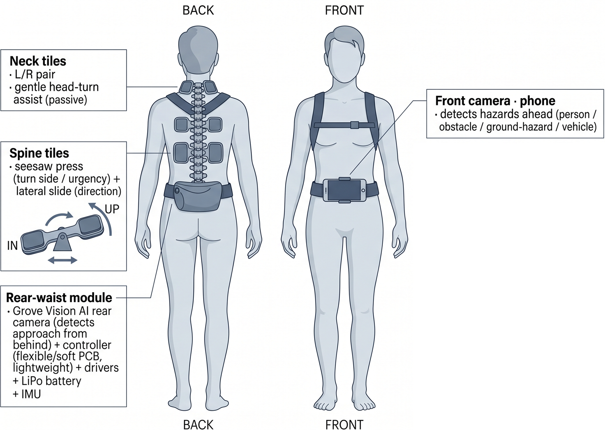
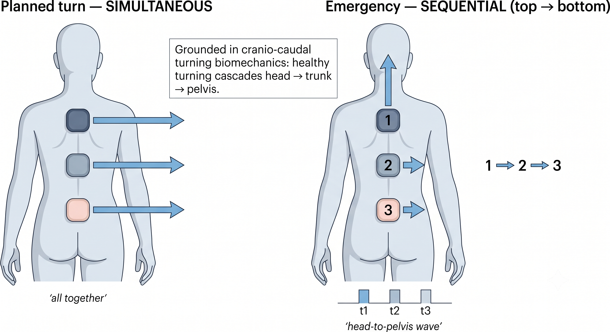

Haptic Wearable for Blind & Low-Vision Runners

The PACER wearable — an articulated spine exoskeleton carrying neck and spine tactile tiles, a rear-waist electronics module, and front/rear cameras.
Overview
Blind and low-vision (BLV) people run — many run marathons — but almost always tethered to a sighted guide by a short rope. The guide does two things at once: they pull the rope to steer, a graded, spatial “this way” the runner can feel, and they talk, calling turns, hazards, and pace. It works, and runners trust it — but it makes running a two-person activity. A BLV runner can't simply head out on their own.
PACER is a wearable that gives that guidance back to the runner. It reproduces the guide's two channels — the rope's directional pull and the guide's speech — directly on the runner's own body, so they can run independently.

Today's practice: tethered guidance from a sighted guide — safe and trusted, but it needs a human and isn't independent. PACER aims to give that guidance back to the runner.
Formative Study
Two studies, done with the people this is for, set the design.
Study 1 — interviews (5 blind runners). I interviewed five fully-blind runners from a “Dark Runners” community about how they run today. Three findings shaped everything after: they can't use vibration (too easy to miss, drowned out in public, less intuitive than a voice or a pull); the direction they trust comes from the rope's graded tension — a real spatial pull, not an abstract buzz; and they are dependent on the guide. The interviews also produced a taxonomy of 19 recurring running situations, from turns and drop-offs to a vehicle emergency.
Study 2 — survey (5 guide runners + 18 sighted runners, N = 23). Across the same 19 situations, I compared how experienced guides handle each one for a BLV partner with how sighted runners handle it for themselves. The two groups agreed strongly on what to do (strategy similarity 78/100) but diverged sharply on how the information is sensed and delivered (channel similarity 17/100) — a 61-point gap. Sighted runners lean on their own vision, hearing, and wrist devices; guides re-express all of it through the rope (space + tension) and speech.
Design implications. That channel gap is the design space. The wearable should reproduce the guide's two channels: a spatial-pull channel (where, and how hard — standing in for the rope) for direction and urgency, and a semantic channel (distinct patterns and voice — standing in for speech) for hazard type — with one reserved, unmistakable emergency-stop, and cues that fire early enough to slow or reposition.
Problem Statement
A sighted runner stays safe and on-course through a private channel — their own eyes, ears, and watch. A BLV runner has no access to it, so today a second person re-expresses that channel through a rope and their voice. The problem: reproduce that guidance on the runner's own body — the rope's directional pull and the guide's speech — so a blind runner can run safely and independently, at speed.
The Device
Why the back. A turn is a whole-body motion that cascades head → trunk → pelvis (cranio-caudal turning biomechanics), and the spine is the axis it turns about. Placing the cues down the spine maps a directional signal onto the very structure that carries out a turn — and lets a single top-to-bottom sequence mirror how a real turn unfolds.
The runner turns; the device only guides. PACER never mechanically rotates the body — spinning a running torso would need heavy actuators and a rigid frame (unsafe on a runner), and a few newtons on the back can't do it anyway. Instead it guides: a gentle left/right nudge at the head, which naturally leads a turn, and paired tiles that press and drag along the spine toward the turn direction. The runner feels the direction and turns themselves — exactly as they already do when they feel the rope tension and follow it. Keeping it a guide, not a motor, is what makes it light and safe.
Direct actuation, not an abstract cue. Because the interviews ruled out vibration, every cue is a real mechanical action rather than a buzz to decode: a seesaw press pushes one side of a tile into the back (turn side and urgency) and a lateral drag pulls the pair sideways (direction). This gives back the same spatial, graded “pull-this-way” quality the runners already trust from the rope. A rigid backing shell and a tensioned strap make the press go into the body instead of lifting the belt away.
Components.
- A head unit that gently pushes left / right to invite the turn.
- Three paired tactile tiles down the spine — enough to carry a legible head-to-pelvis sequence — each combining a seesaw press with a lateral drag.
- A soft rear-waist module holding the controller, motor drivers, battery, and an IMU for closed-loop turn angle, so a cue can stop once the runner has turned far enough.
- A phone at the front for forward sensing and the voice / semantic channel (pace, environment) — what touch can't carry.
Simultaneous vs. sequential. For a planned turn, the tiles cue together. For a sudden, emergency turn, they cue sequentially, top → bottom — a head-to-pelvis wave that mirrors how a healthy body turns. Whether that sequence reads more clearly and urgently than a single simultaneous cue — and whether runners can identify the intended turn angle from it — is the core open question of this work.

A planned turn cues the tiles simultaneously; an emergency turn cues them sequentially, top→bottom — a head-to-pelvis wave grounded in cranio-caudal turning biomechanics.
Sensing & Computer Vision
The survey also told the sensing stack what to look for first: runners rated ground-plane hazards (potholes, uneven ground, drop-offs) and vehicles the most dangerous, so those are prioritized.
- Forward sensing — a phone camera runs an on-device object detector (YOLO, four classes: person, obstacle, ground-hazard, vehicle) trained on our own greenway running footage and deployed to iPhone via CoreML for real-time, fully offline alerts.
- Close-range depth — a short-range depth sensor (LiDAR / time-of-flight) gauges how near and how urgent a hazard is, complementing the camera and filtering distant false alarms. Our characterization found it reliable to ~4–5 m, so it serves as a close-range safety layer rather than the primary sensor.
- Rear sensing — a Grove Vision AI edge module flags people or vehicles approaching from behind, the highest-value hazard case for a runner.
- Decision engine — detections are ranked by urgency and drive the haptic tiles (and voice) only when the situation changes, keeping cues sparse and legible.
Evaluation Plan
The study builds up in three stages:
- Bench characterization — measure each tile's press / drag force and salience against a rigid backing, and validate the forward + downward + rear sensing stack against the perception requirements the survey prioritized (ground-plane hazards and vehicles first).
- Angle-identification pilot — stationary or slow-walk: can a runner read the intended turn side and angle from the cue alone, and does the sequential cue beat the simultaneous one on accuracy and reaction time?
- In-field study with BLV runners — with the Dark Runners community: can on-body guidance hold a course and cue real turns and hazards at running speed, compared against the guide-rope baseline — measuring safety, response, workload, and trust.
A manuscript on this work is in preparation.